filtering_vignette
filtering_vignette.Rmdlibrary(RADstackshelpR) library(vcfR) #> Warning: package 'vcfR' was built under R version 3.5.2 #> #> ***** *** vcfR *** ***** #> This is vcfR 1.9.0 #> browseVignettes('vcfR') # Documentation #> citation('vcfR') # Citation #> ***** ***** ***** *****
Read in your unfiltered vcf file
#read in vcf as vcfR vcfR <- read.vcfR("~/Desktop/aph.data/populations.snps.vcf")
#rename mislabeled sample colnames(vcfR@gt)[colnames(vcfR@gt) == "A_californica_334171"]<-"A_woodhouseii_334171" #generate popmap file. Two column popmap with the same format as stacks, and the columns must be named 'id' and 'pop' popmap<-data.frame(id=colnames(vcfR@gt)[2:length(colnames(vcfR@gt))],pop=substr(colnames(vcfR@gt)[2:length(colnames(vcfR@gt))], 3,11)) ### check the metadata present in your vcf vcfR #> ***** Object of Class vcfR ***** #> 115 samples #> 87 CHROMs #> 210,336 variants #> Object size: 685.5 Mb #> 57.1 percent missing data #> ***** ***** ***** vcfR@gt[1:10,1:2] #> FORMAT A_californica_333849 #> [1,] "GT:DP:AD:GQ:GL" NA #> [2,] "GT:DP:AD:GQ:GL" NA #> [3,] "GT:DP:AD:GQ:GL" NA #> [4,] "GT:DP:AD:GQ:GL" "1/1:67:0,67:40:-256.40,-21.43,0.00" #> [5,] "GT:DP:AD:GQ:GL" "1/1:67:0,67:40:-226.28,-20.45,0.00" #> [6,] "GT:DP:AD:GQ:GL" "0/0:2:2,0:32:-0.00,-2.62,-6.23" #> [7,] "GT:DP:AD:GQ:GL" "1/1:2:0,2:27:-4.96,-2.15,-0.00" #> [8,] "GT:DP:AD:GQ:GL" "0/0:2:2,0:31:-0.00,-2.51,-5.68" #> [9,] "GT:DP:AD:GQ:GL" NA #> [10,] "GT:DP:AD:GQ:GL" NA
This peek into the genotype matrix of the vcfR object (which is accessed via vcfR@gt) shows the matrix with # of rows = # of SNPs, and # of columns = # of samples + 1 (first column describing format). Going forward, each cell in this matrix will be referred to as a genotype, each row will be referred to as a SNP, and each column will be referred to as a sample.
step 1: Implement quality filters that don't involve missing data. Removing low data samples/SNPs will alter percentage/quantile based cutoffs, so we wait to implement those until after deciding on our final set of samples for downstream analysis
Note:If you have a very large vcf output file that you would like to work with in Rstudio, you could implement some percentage based filters (e.g. remove all SNPs above 50% missing data) via vcftools to reduce your filesize before starting to filter in R. Just be aware that once you drop low data samples, your previously enforced (per SNP or locus) missing data % will no longer be exact.
Jon Puritz has an excellent filtering tutorial that is focused specifically on filtering RADseq data: https://www.ddocent.com/filtering/ Some of these RAD specific filters can't be applied to a vcf output by stacks, which doesn't retain metadata like mapping quality and strand, but we can follow these guidelines for hard filtering (he suggests minimum depth=3, gq =30), and can implement suggested filters like allele balance and max depth, here in R. Our first function is a hard filter that allows you to set minimum depth and genotype quality thresholds to retain a called genotype.
#hard filter to minimum depth of 5, and minimum genotype quality of 30 vcfR<-hard.filter.vcf(vcfR=vcfR, depth = 5, gq = 30) #> [1] "32.92% of genotypes fall below a read depth of 5 and were converted to NA" #> [1] "2.01% of genotypes fall below a genotype quality of 30 and were converted to NA"
From Puritz SNP filtering tutorial "Allele balance: a number between 0 and 1 representing the ratio of reads showing the reference allele to all reads, considering only reads from individuals called as heterozygous, we expect that the allele balance in our data (for real loci) should be close to 0.5" This function filters for allele balance, converting heterozygous genotypes with an allele balance < .25 or > .75 to 'NA'.
#execute allele balance filter vcfR<-filter.allele.balance(vcfR) #> [1] "7.56% of het genotypes (0.39% of all genotypes) fall outside of .25 - .75 allele balance and were converted to NA"
This is a max depth filter (super high depth loci are likely multiple loci stuck together into a single paralogous locus). We want to remove the upper tail of the distribution which is likely full of paralogues, without tossing too much of our overall data. We run this function first without specifying 'maxdepth' to visualize the distribution, and then set the cutoff to filter our vcf by specifying a numeric value to 'maxdepth'. Note: we want to apply this 'per SNP' rather than 'per genotype' otherwise we will simply be removing most of the genotypes from our deepest sequenced samples (because sequencing depth is so variable between samples)
#visualize and pick appropriate max depth cutoff max_depth(vcfR)
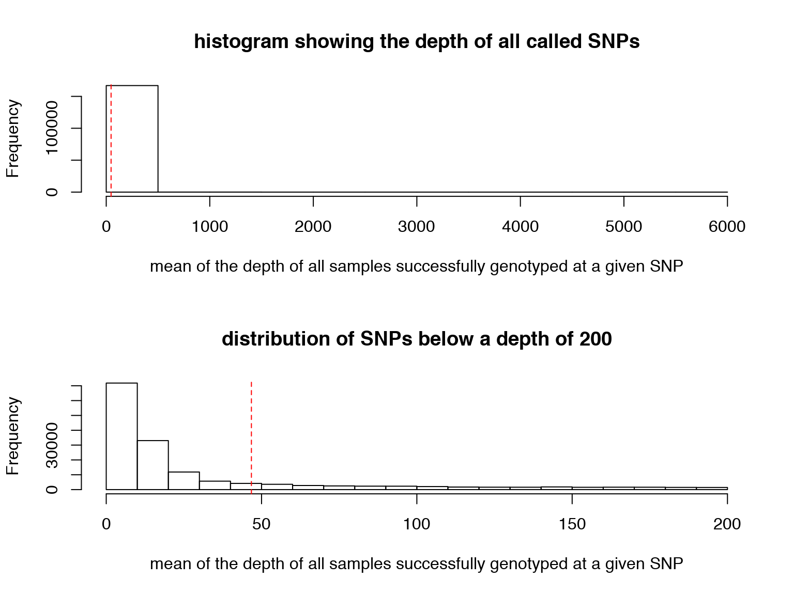
#> [1] "dashed line indicates a mean depth across all SNPs of 46.7"
par(mfrow=c(1,1))
#filter vcf by the max depth cutoff you chose
vcfR<-max_depth(vcfR, maxdepth = 100)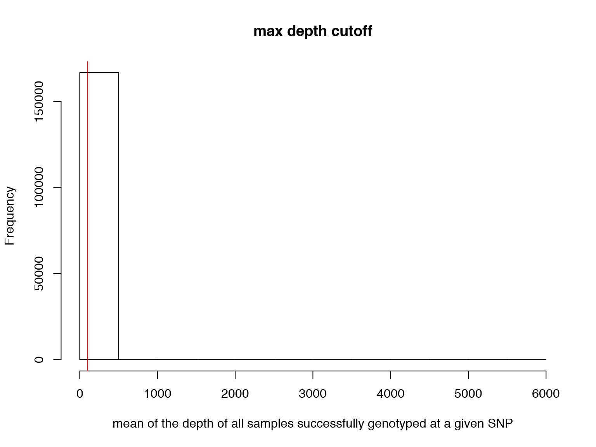
#> [1] "12.85% of SNPs were above a mean depth of 100 and were removed from the vcf"Note: It may be a good idea to additionally filter out SNPs that are significantly out of HWE if you have a really good idea of what the population structure in your sample looks like and good sample sizes in each pop. For this dataset, which is highly structured (many isolated island pops) with species boundaries that are in flux, I am not going to use a HWE filter, because I don't feel comfortable confidently identifying populations in which we can expect HWE.
#check vcfR to see how many SNPs we have left vcfR #> ***** Object of Class vcfR ***** #> 115 samples #> 78 CHROMs #> 183,293 variants #> Object size: 408 Mb #> 79.79 percent missing data #> ***** ***** *****
Step 2: visualize missing data by sample. Check out the visualizations and make decision on which samples to keep for downstream analysis.
Determining which samples to retain is highly project specific, and is contingent on your sampling, your taxa, the sequencing results, etc. It is also wise to take missing data into account by population. Often we don't know a-priori what our populations will look like, but in general we want to avoid making inferences about populations if they have consistently less information than the rest of our dataset. On the flip side of that coin, you may have designed a project to get information about a rare sample/population that lacks existing genetic sampling, and therefore must retain specific samples despite low sequencing and high missing data. This is a reality, and simply needs to be addressed carefully.
We run this function first without specifying 'cutoff', to visualize the distribution of missing data per sample. Then we run the function with a set cutoff for the maximum amount of missing data allowed to retain a sample, which will remove samples falling below our cutoff from the vcf.
#run function to visualize samples miss<-missing.by.sample(vcfR=vcfR, popmap = popmap) #> `stat_bindot()` using `bins = 30`. Pick better value with `binwidth`. #> `stat_bindot()` using `bins = 30`. Pick better value with `binwidth`.
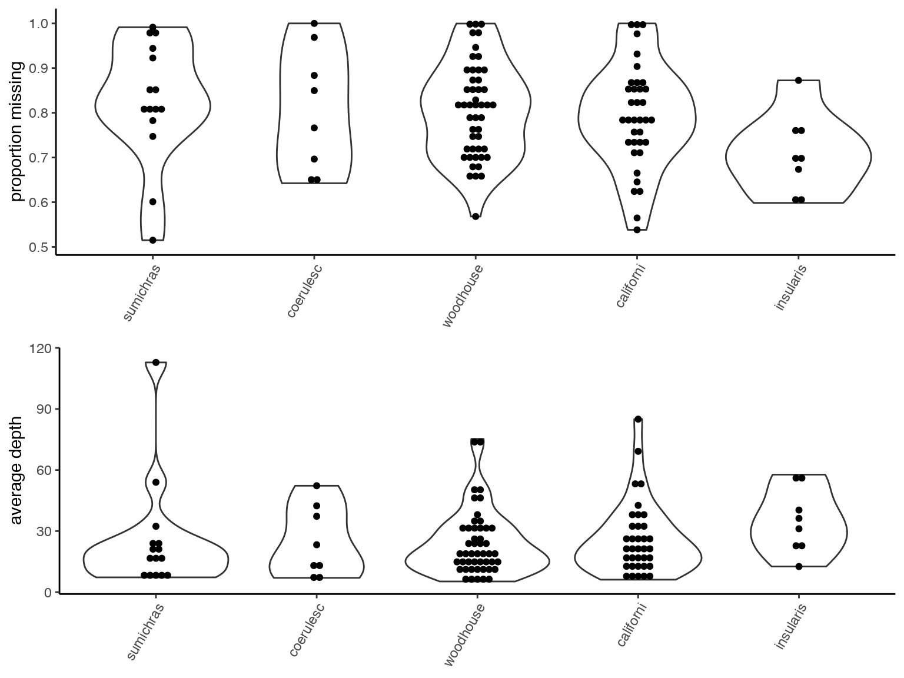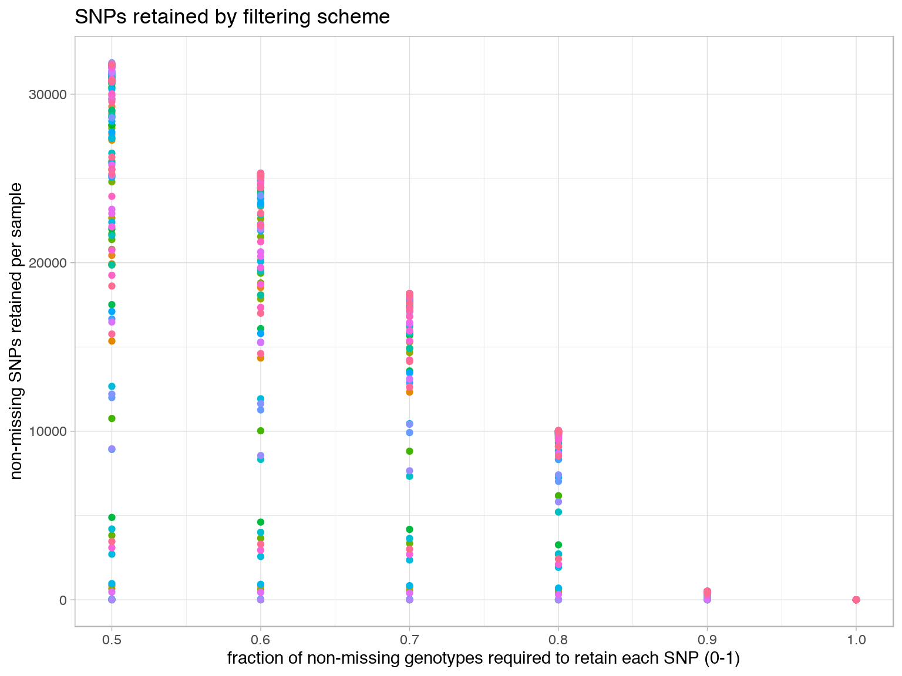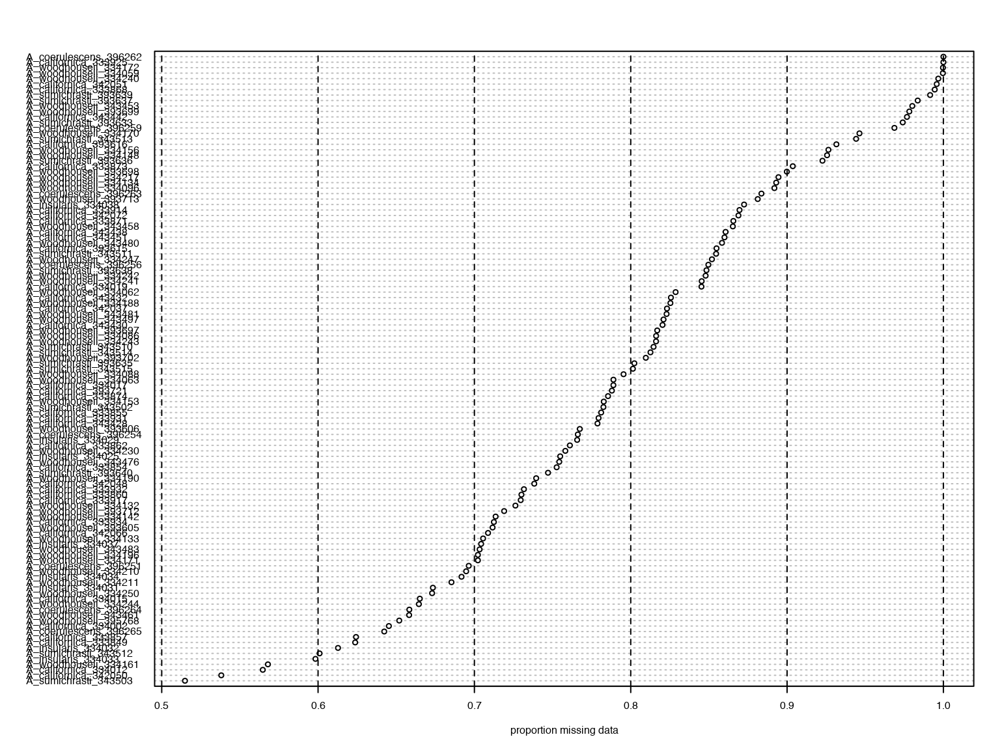
#run function to drop samples above the threshold we want from the vcf vcfR<-missing.by.sample(vcfR=vcfR, cutoff = .91)
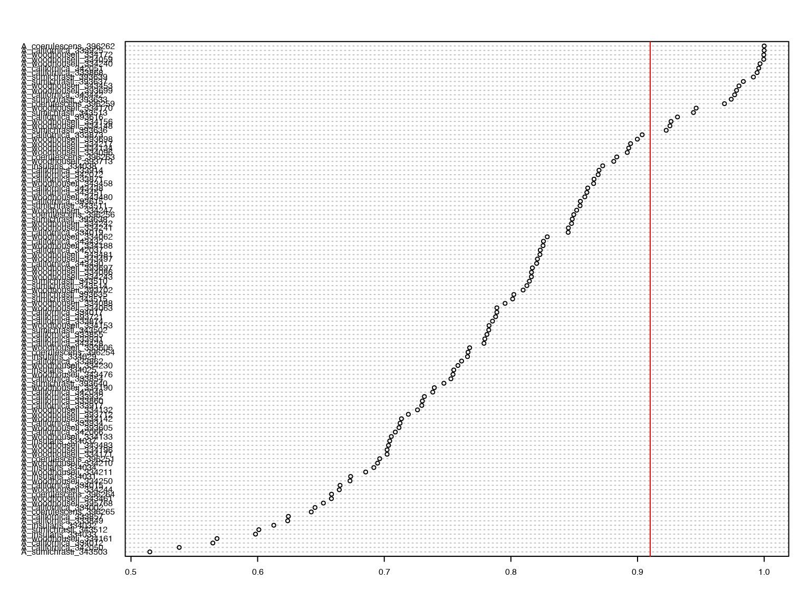
#> [1] "20 samples are above a 0.91 missing data cutoff, and were removed from VCF"
#subset popmap to only include retained individuals
popmap<-popmap[popmap$id %in% colnames(vcfR@gt),]
#reorder vcf to group by species
vcfR@gt<-vcfR@gt[,c(1:20,22:57,21,58:95)]
#alternatively, you can drop individuals from vcfR manually using the following syntax, if a strict cutoff doesn't work for your dataset
#vcfR@gt <- vcfR@gt[,colnames(vcfR@gt) != "E_trichroa_4702" & colnames(vcfR@gt) != "E_trichroa_27882"]Step 3: Set the arbitrary missing data cutoff
We can visualize the effect that typical missing data cutoffs will have on both the number of SNPs retained and the total missing data in our entire dataset. We want to choose a cutoff that minimizes the overall missing data in the dataset, while maximizing the total number of loci retained. Note: This will also depend on the samples that we decided to include above. A good rule of thumb is that samples shouldn't be above 50% missing data after applying this cutoff. So if we are retaining low data samples out of necessity or project design, we may have to set a more stringent cutoff at the expense of total SNPs retained for downstream analyses.
We run this function without setting cutoff to visualize the distribution of missing data across potential filtering schemes, and then set the cutoff to remove SNPs falling below a given proportion (0-1) of missing data.
#visualize missing data by SNP and the effect of various cutoffs on the missingness of each sample missing.by.snp(vcfR) #> Picking joint bandwidth of 0.0655
 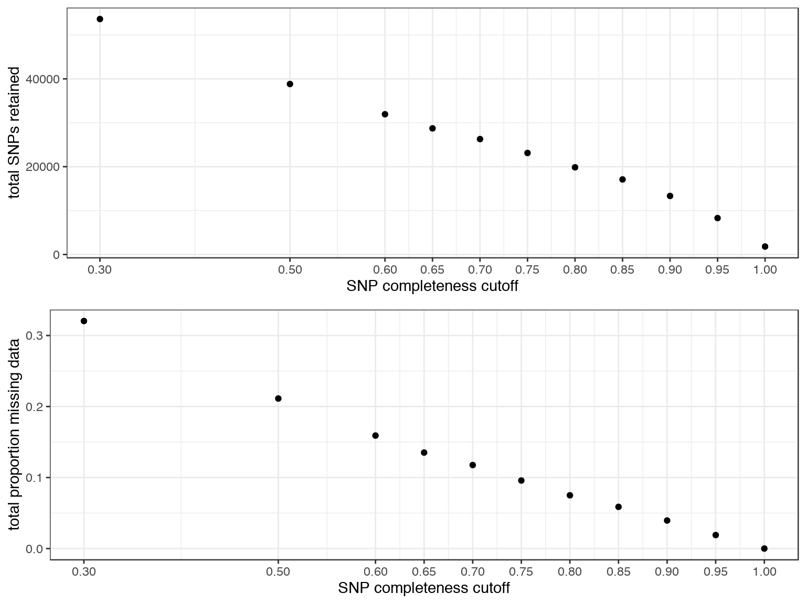
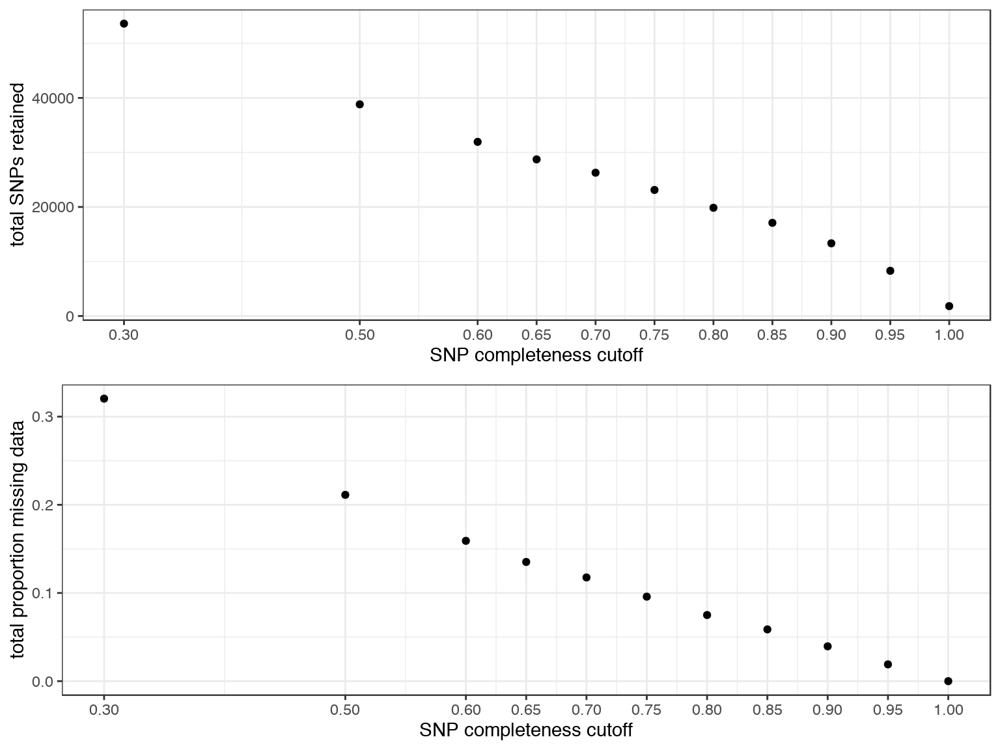
#> filt missingness snps.retained
#> 1 0.30 0.32041725 53623
#> 2 0.50 0.21129607 38822
#> 3 0.60 0.15913715 31940
#> 4 0.65 0.13518493 28727
#> 5 0.70 0.11760089 26283
#> 6 0.75 0.09582935 23118
#> 7 0.80 0.07498840 19853
#> 8 0.85 0.05870236 17090
#> 9 0.90 0.03948609 13333
#> 10 0.95 0.01901272 8294
#> 11 1.00 0.00000000 1809
#choose a value that retains an acceptable amount of missing data in each sample, and maximizes SNPs retained while minimizing overall missing data, and filter vcf
vcfR<-missing.by.snp(vcfR, cutoff = .85)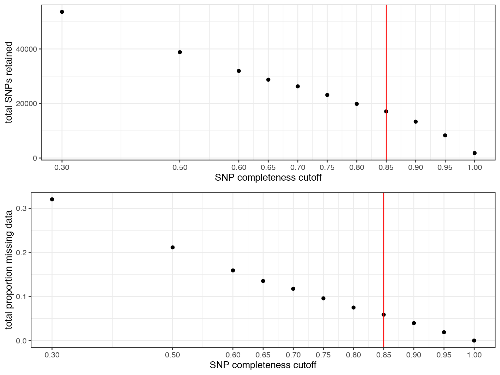
#> [1] "90.68% of SNPs fell below a completeness cutoff of 0.85 and were removed from the VCF"Step 4: investigate the effect of a minor allele frequency cutoff on our downstream inferences.
MAF cutoffs can be helpful in removing spurious and uninformative loci from the dataset, but also have the potential to bias downstream inferences. Linck and Battey (2019) have an excellent paper on just this topic. From the paper-
"We recommend researchers using model‐based programs to describe population structure observe the following best practices: (a) duplicate analyses with nonparametric methods suchas PCA and DAPC with cross validation (b) exclude singletons (c) compare alignments with multiple assembly parameters When seeking to exclude only singletons in alignments with missing data (a ubiquitous problem for reduced‐representation library preparation methods), it is preferable to filter by the count (rather than frequency) of the minor allele, because variation in the amount of missing data across an alignment will cause a static frequency cutoff to remove different SFS classes at different sites""
Our package contains a convenient wrapper function that streamlines the investigation of different MAF cutoffs. Warning: this is a heavy function if it is run without the 'min.mac' option. It is converting the entire vcf into a genlight and running 6 unique dapc iterations, which will take a minute for larger datasets. If you set 'min.mac' it will just filter your dataset, and should run quickly.
#use min.mac() to investigate the effect of multiple cutoffs min_mac(vcfR = vcfR, popmap = popmap)
#> [1] "for 1 minimum MAC cutoff, compare k means clustering to popmap assignment"
#>
#> 1 2 3 4 5
#> californi 0 31 0 0 0
#> coerulesc 6 0 0 0 0
#> insularis 0 0 0 0 8
#> sumichras 0 0 0 10 0
#> woodhouse 0 0 39 0 0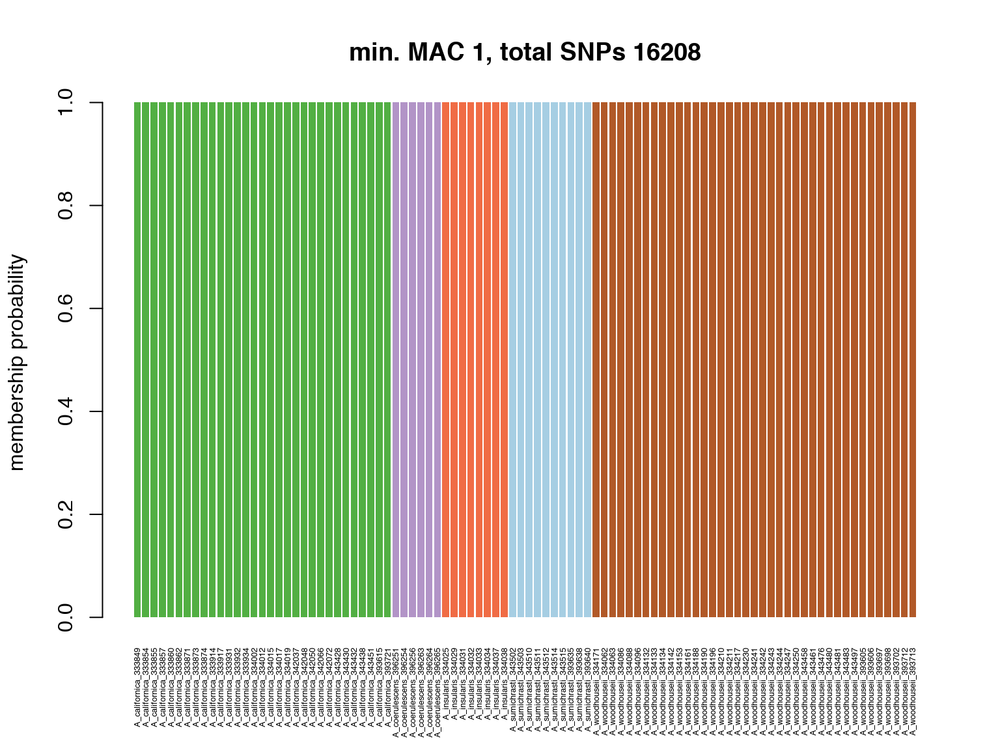
#> [1] "DAPC with min. MAC 1 and 16208 total SNPs, complete"
#> [1] "for 2 minimum MAC cutoff, compare k means clustering to popmap assignment"
#>
#> 1 2 3 4 5
#> californi 0 0 0 0 31
#> coerulesc 0 6 0 0 0
#> insularis 8 0 0 0 0
#> sumichras 0 0 0 10 0
#> woodhouse 0 0 39 0 0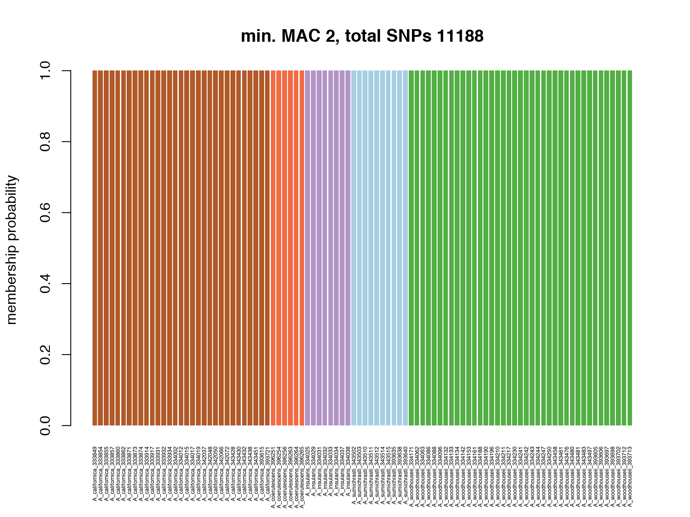
#> [1] "DAPC with min. MAC 2 and 11188 total SNPs, complete"
#> [1] "for 3 minimum MAC cutoff, compare k means clustering to popmap assignment"
#>
#> 1 2 3 4 5
#> californi 0 0 0 0 31
#> coerulesc 0 6 0 0 0
#> insularis 0 0 0 8 0
#> sumichras 0 0 10 0 0
#> woodhouse 39 0 0 0 0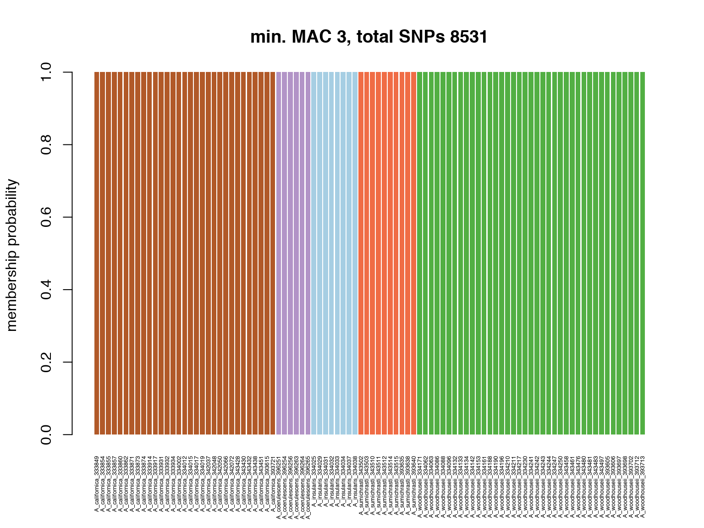
#> [1] "DAPC with min. MAC 3 and 8531 total SNPs, complete"
#> [1] "for 4 minimum MAC cutoff, compare k means clustering to popmap assignment"
#>
#> 1 2 3 4 5
#> californi 0 0 31 0 0
#> coerulesc 0 6 0 0 0
#> insularis 8 0 0 0 0
#> sumichras 0 0 0 10 0
#> woodhouse 0 0 0 0 39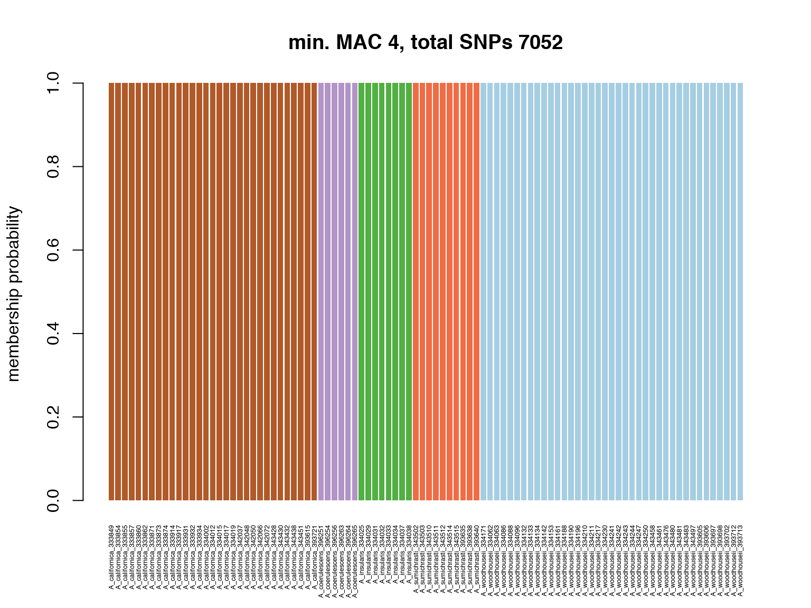
#> [1] "DAPC with min. MAC 4 and 7052 total SNPs, complete"
#> [1] "for 5 minimum MAC cutoff, compare k means clustering to popmap assignment"
#>
#> 1 2 3 4 5
#> californi 0 31 0 0 0
#> coerulesc 0 0 0 0 6
#> insularis 0 0 0 8 0
#> sumichras 10 0 0 0 0
#> woodhouse 0 0 39 0 0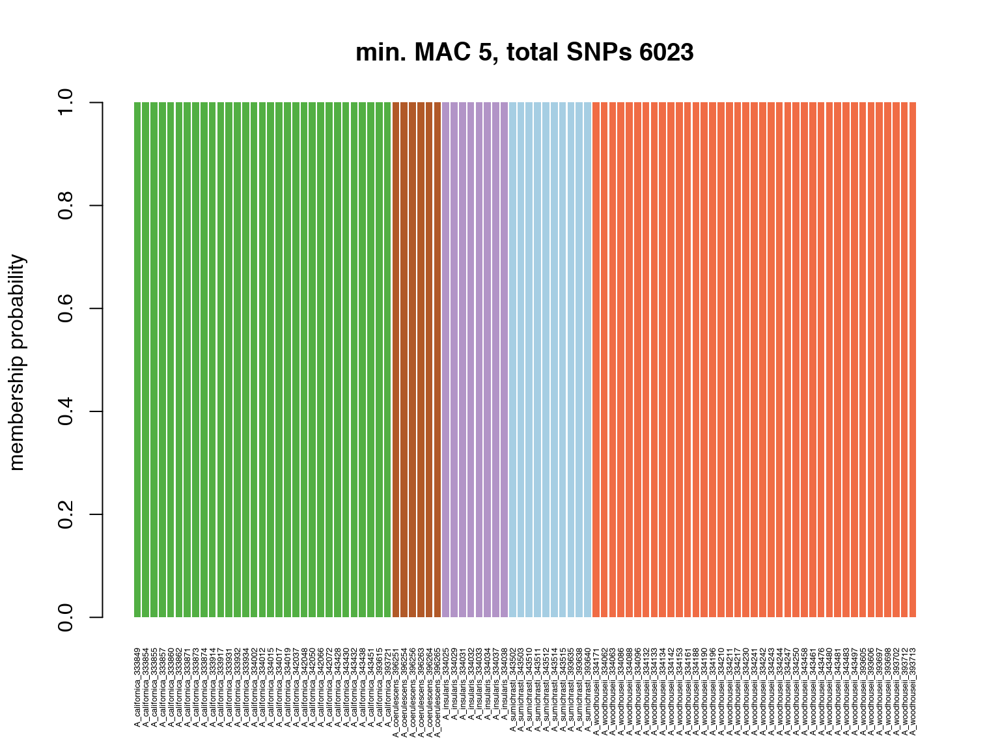
#> [1] "DAPC with min. MAC 5 and 6023 total SNPs, complete"
#> [1] "for 10 minimum MAC cutoff, compare k means clustering to popmap assignment"
#>
#> 1 2 3 4 5
#> californi 0 0 0 31 0
#> coerulesc 0 0 6 0 0
#> insularis 8 0 0 0 0
#> sumichras 0 10 0 0 0
#> woodhouse 0 0 0 0 39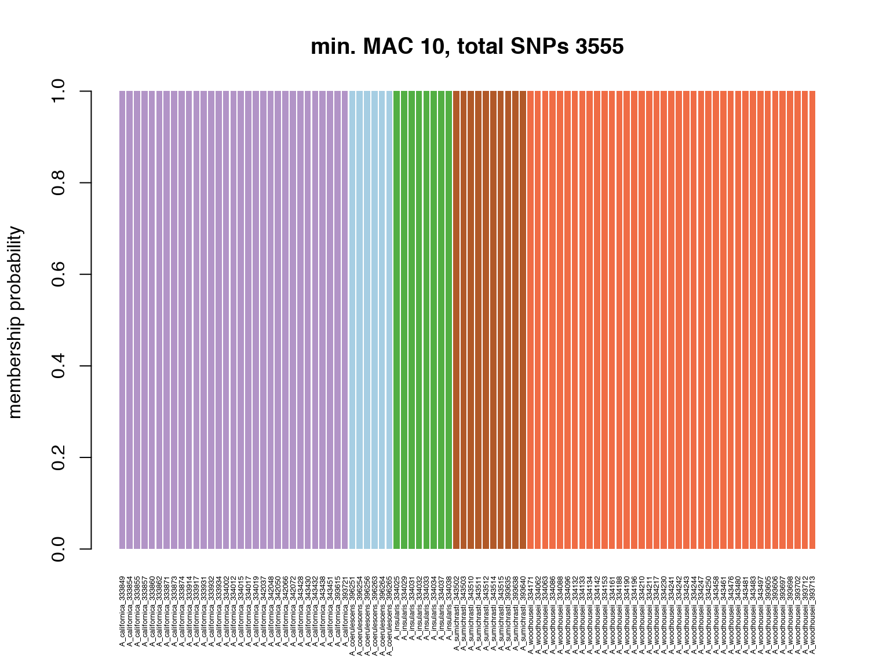
#> [1] "DAPC with min. MAC 10 and 3555 total SNPs, complete"
#based on these visualizations, I will remove singletons from the dataset, as it doesn't affect group inference
vcfR<-min_mac(vcfR, min.mac = 2)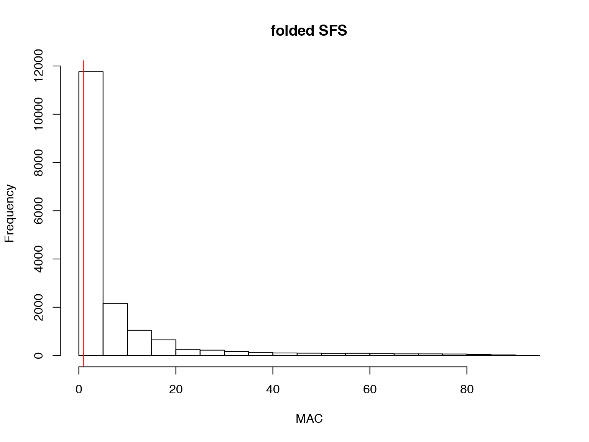
#> [1] "34.53% of SNPs fell below a minor allele count of 2 and were removed from the VCF"check once more to see how many SNPs and individuals remain compared to our original, unfiltered vcf
vcfR #> ***** Object of Class vcfR ***** #> 94 samples #> 35 CHROMs #> 11,188 variants #> Object size: 77.1 Mb #> 5.896 percent missing data #> ***** ***** ***** #plot depth per snp and per sample dp <- extract.gt(vcfR, element = "DP", as.numeric=TRUE) heatmap.bp(dp, rlabels = FALSE)
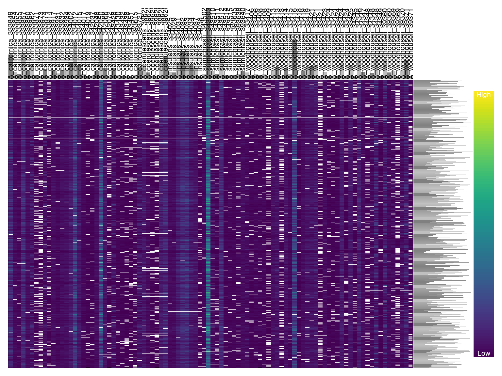
#plot genotype quality per snp and per sample gq <- extract.gt(vcfR, element = "GQ", as.numeric=TRUE) heatmap.bp(gq, rlabels = FALSE)
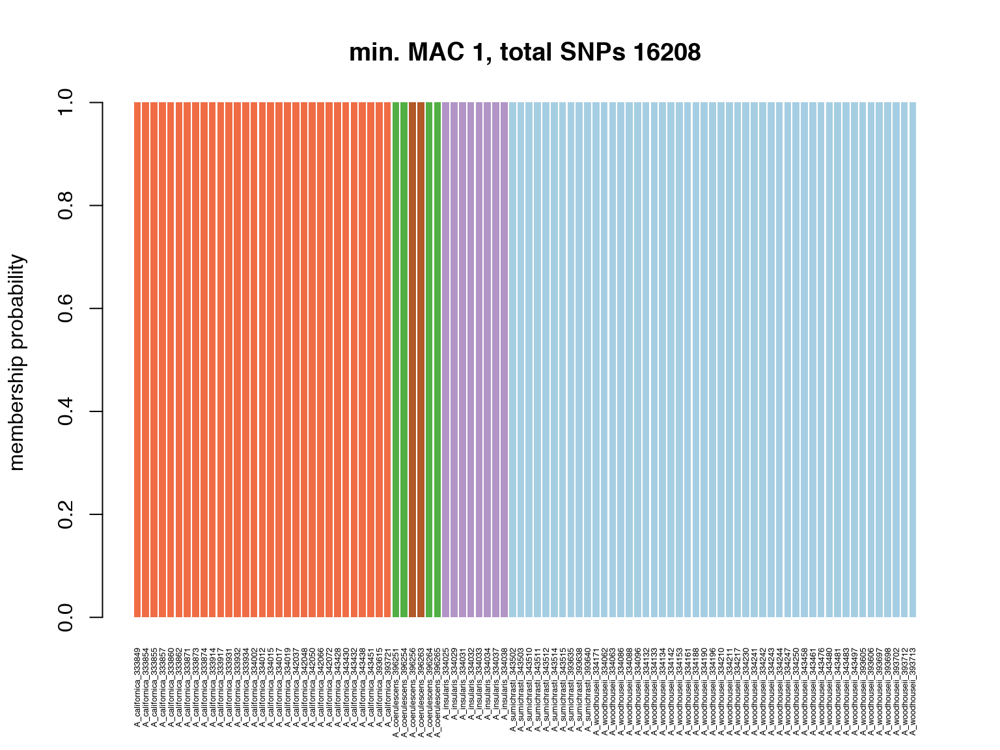
We can use the convenient function 'write.vcf' from vcfR to export our filtered vcf file for downstream analyses
#write.vcf(vcfR, "~/Desktop/aph.data/filtered.vcf.gz")If you need physically unlinked loci (which is a requirement of some programs, e.g. structure) this filtering step should always be done last, because it is not quality aware. Introducing a quality-blind linkage filter before doing the quality based filtering shown here would potentially remove quality SNPs while leaving us with only the low quality SNPs in a locus or genomic region. If filtering for linkage is needed, it can be done on our output vcf file with a simple one-liner via vcftools (set thin to whatever bp distance you assume linakge decays at in your study organism) vcftools --vcf vcf.vcf --thin 10000 --recode --out vcf